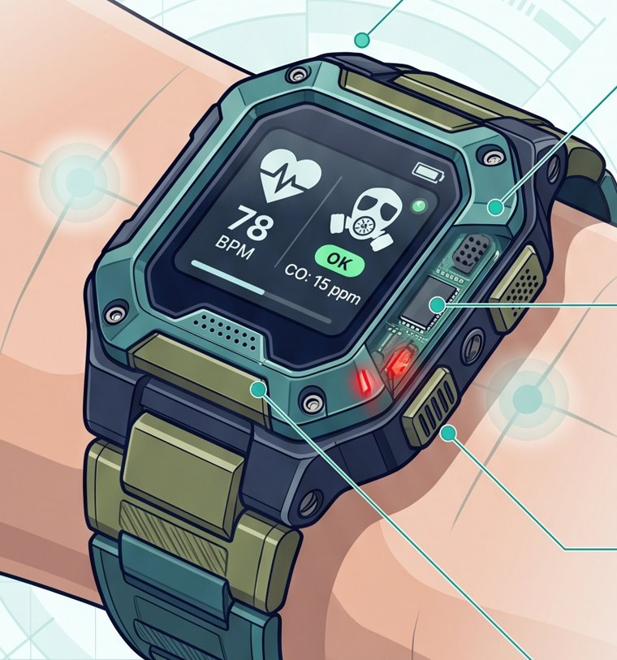
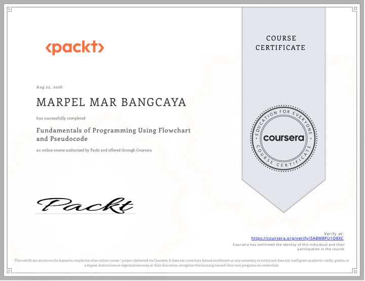
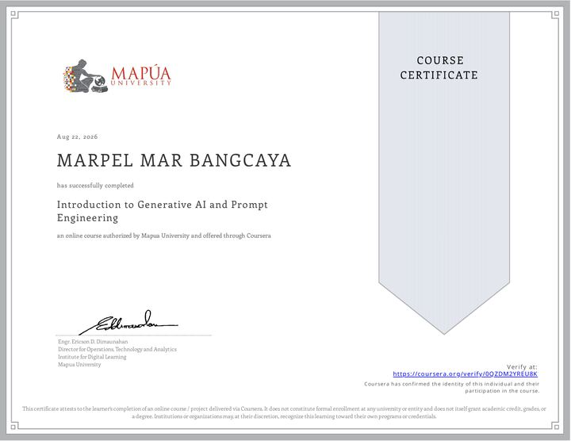
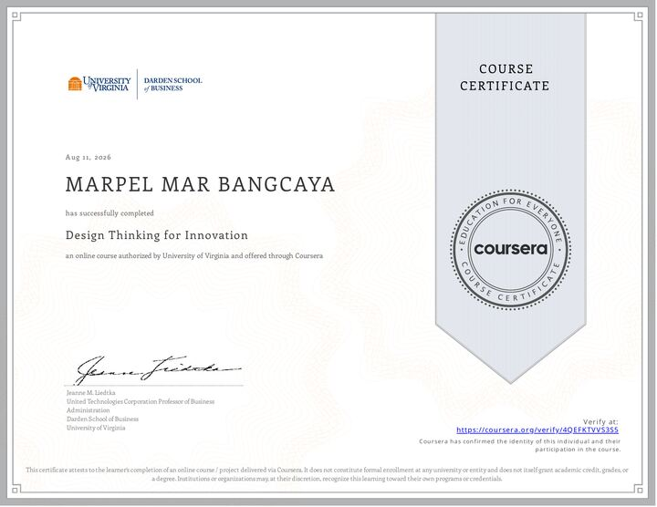
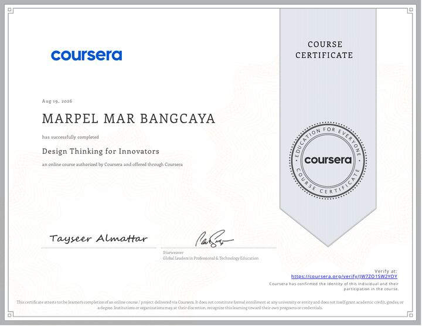
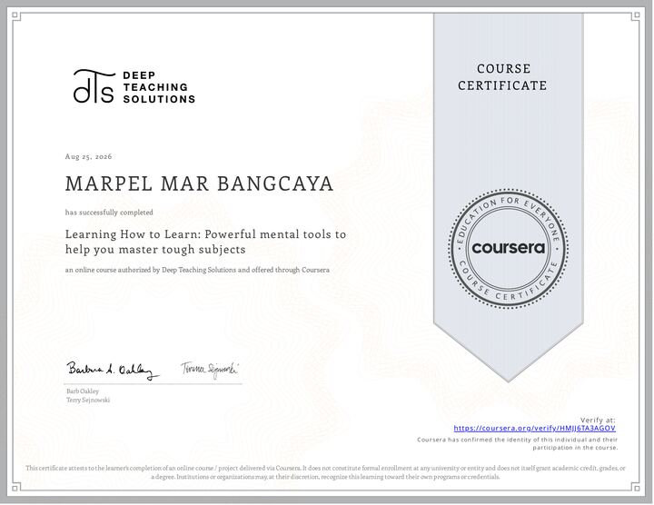
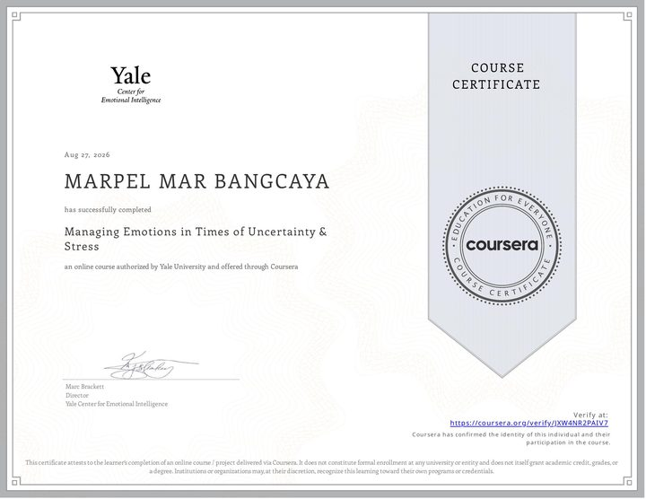
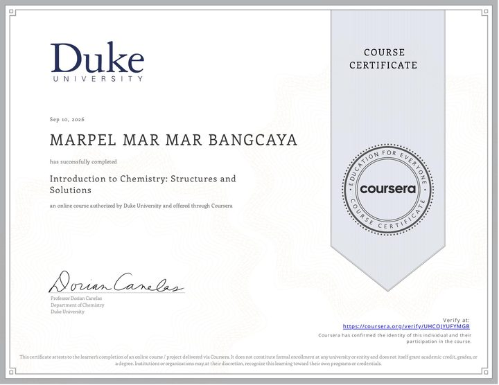
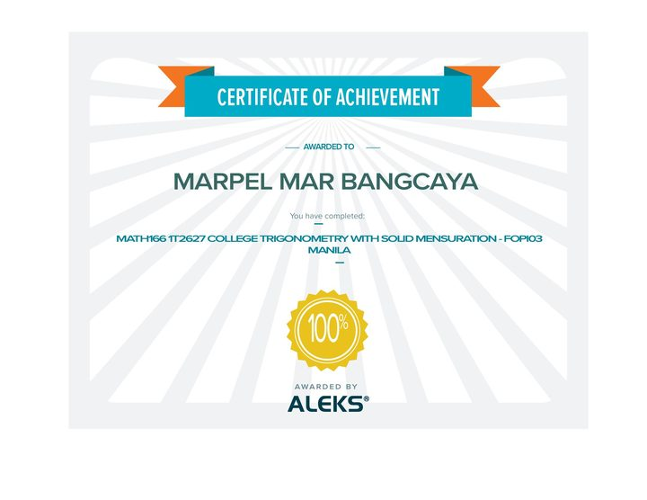
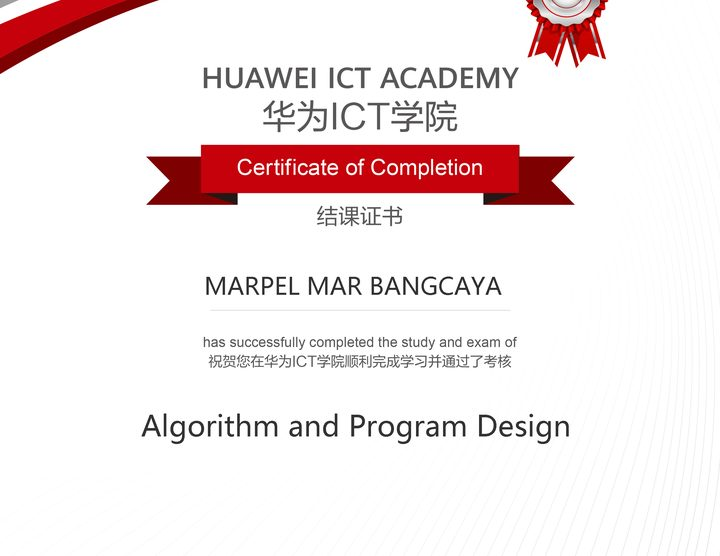

BS Computer Engineering — In Progress
Systems that watch over the people who watch the systems.
Marine engineer turned computer engineering student, building the embedded safety tools I wished I'd had on watch.



15Real coursework, not just exercises.
Three deliverables from CpE coursework so far — each one a working artifact, not just a grade.
Number Systems & Notations Calculator
Takes a postfix or prefix expression, evaluates it with a stack, reconstructs the fully-parenthesized infix version, and converts the result into decimal, binary, hexadecimal, and octal — one pipeline instead of four separate tools. Rejects malformed input with a retry instead of crashing, carries negative results through every base correctly, and every test case was cross-checked live against three independent reference sites (a notation visualizer, a stack visualizer, and a hex converter) until all three matched.
SentryBand Technical Report
A wrist-worn safety concept for the engineers and oilers standing watch in a ship's engine room, developed as an APA 7 technical report and a NABC pitch (Need · Approach · Benefit · Competition). It fuses heat-strain sensing (skin temperature and heart rate) with gas sensing (carbon monoxide, hydrogen sulfide, and combustible vapors), checks every reading against the NIOSH heat framework and standard gas-exposure thresholds, and escalates from a vibration alert to a full vibration/LED/buzzer alarm with a Bluetooth Low Energy notification to the control-room dashboard — sealed in an IP65-rated housing built for engine-room heat and oil.
Engineering the College Experience
A scripted interview-style video essay answering four assigned questions through engineering analogies: high school vs. college as a closed-loop vs. open-loop feedback system, a weekly schedule as a task-scheduling problem (starvation, bottlenecks, and a built-in safety margin), a graduation plan as a dependency graph with a critical path, and upper-division students as the fastest available feedback loop of tribal knowledge.
What I build with, in practice.
Self-rated, and scoped to tools I've actually shipped something with.
15 certifications, completed alongside coursework.
Short courses taken between engine-room watches and CpE assignments.

View certificate
View certificate
View certificate
View certificate
View certificate
View certificate
View certificateWho I am and how I got here.
I'm Marpel — a BS Marine Engineering graduate now serving as 4th Engineer aboard an international vessel, and studying BS Computer Engineering fully online in whatever hours the watch schedule leaves free.
Marine engineering taught me to think in safety margins and failure modes. Computer engineering is where I'm learning to build the embedded tools that watch over the people still standing watch — starting with SentryBand, a wearable heat-strain and toxic-gas monitor for the engine room.
Most of the coursework happens in whatever connectivity the ship allows between watches — Flowgorithm and Python for the logic-and-design work, GitHub and Claude Code to keep the workflow moving from one port to the next.
Open to work in embedded safety and computer engineering.
Reach out by email, or find me on any of these.